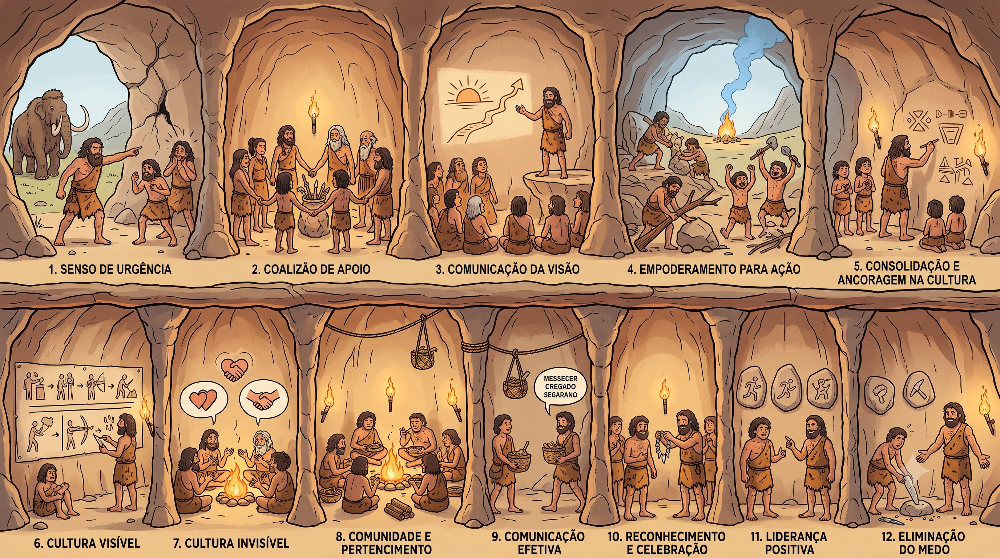

Da intenção de mudar para a transformação que fica gravada na pedra. Cada nicho da caverna pré-histórica é um conceito vivo — dos 8 passos de Kotter às forças invisíveis que fazem ou quebram culturas.
Passe o mouse e clique em qualquer nicho da caverna — a mudança inteira mora numa imagem só.
